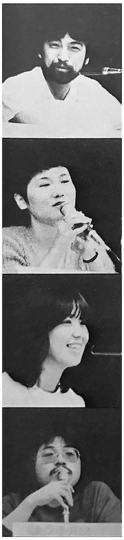

Exploring Queen's Appeal
Panel Discussion at the 1982 Japanese Fanclub Gathering

Naoki Tachikawa — Music Critic
Kaoruko Togo — Music Life Editor-in-Chief
Keiko Imaizumi — Radio Japan DJ
Tenpei Matsubayashi — Warner Pioneer
Tachikawa: Freddie is generally known as someone who's difficult to interview, or quite eccentric. He's a Japanophile, and has been featured in magazines for buying ukiyo-e prints and antiques. What's interesting, though, is that while the general tendency for foreigners visiting Japan is to buy more well-known prints such as Hokusai's The Great Wave or similar, Freddie actually has some esoteric knowledge of rarer prints by Yoshitoshi and Toyokuni, artists like that.
Togo: I don't know anything about those artists myself! (laughs)
Tachikawa: He has a discerning eye when it comes to art and antiques. He chooses things that only a knowledgable person would know. That's why I say he's eccentric! (laughs) And when listening to his music, his songs are incredibly detailed and meticulous, like songs in 3/4 time or inserting unusual phrasing of the piano or guitar. It's like he has an obsession with things that are unusual or unexpected.
Togo: As one might imagine! (laughs)
Tachikawa: He seems to be the kind of person who processes things through self-expression, as though he's sat in a chair and is busy checking out the expressions of his own face in a mirror.
Togo: There is a narcissistic side to him.
Tachikawa: So when it comes to Queen's recent songs, if they're not careful they can come off as a bit cringey, for lack of better term. But it's that willingness to be cringey that actually makes Queen's work so amazing.
Togo: I have met Freddie quite a few times now and while calling him an eccentric might be fitting, he did have an extremely meticulous and sensitive side to him.
Matsubayashi: Let's talk about his dog toys! (laughs)
Tachikawa: Ah yes! That was around the time of their third visit to Japan, in 1979. Interviewing the other three went smoothly during their Osaka concert, but Freddie kept pushing his interview back because he wasn't feeling well or something. Eventually it was down to the wire—the deadline was the next day and if we didn't get anything, the page would be blank, so he finally acquiesced.
I could'nt get a room at the same place where they were staying, so I booked a room at another hotel and went over with my tape recorder and camera. I went to the room where he was staying and when I knocked on the door Freddie himself answered, much to my surprise. He was holding a small dog toy which was quite unexpected considering his bearded face. "Hello!" he said. (laughs)
For about five minutes, I couldn't get him to talk about work at all—he just kept talking about dog stuff. "Isn't this cute, isn't this cute?" I just nodded and kept saying "Oh yes, it's so cute..." (laughs)
So Freddie was basically out-of-touch with the trials and tribulations of everyday life. He was concerned with his music, collecting antiques, dog toys, stuff like that... (laughs)
In contrast, the most ordinary one of the group was probably John Deacon. He was an everyman and if he was out walking in the city, although everyone in this venue would recognize him as Queen's bassist, no one else would give him much thought. Like when I met him in Shinjuku, he was about 30 minutes late for our appointment, and he was so apologetic! His face was bright red. When I asked him what had happened, he said "I went out to buy a camera but I got lost and couldn't find my way back!" (laughs) He was truly such an ordinary person that no one would bother approaching him if he were out walking alone.
Togo: That's true. He blends in with tourists pretty easily. But I really liked him, he's such a nice guy and he has a good sense of humor. Brian can be quite nervous and that can make for a difficult interview, but John just grins no matter what you ask him.
Imaizumi: He recently got a perm.
A collective gasp of surprise from the audience
Togo: Just a little bit at the front like this, kind of like Hayashiya Sanpei. He was quite worried about it, actually... he had this look on his face like, "Was this a good idea?" So I just casually told him, "Yes, it suits you!" (laughs)
{kind=link}
Matsubayashi: There's a lot of interesting anecdotes to tell about John, like when he came to Japan this year and met with Togo in the dressing room at the Budoukan for a Music Life interview. The day before, they had already finished their individual photoshoots and the group shoot that day went smoothly. Everyone was relieved it was over, but John remained behind in the room. He was dressed differently—the day prior he had been dressed casually in a white T-shirt and jeans, but he said he thought he looked cooler today, so he asked to take another photo.
Togo: Yeah, that's basically what happened. And then in 1979, I was interviewing them in Osaka, and Roger's and Brian's interviews had wrapped but I didn't have anything else scheduled after that. So I was packing up all of my belongings getting ready to go home when I saw John standing there with a big grin. He heard that I was going to interview him as well. Well, John is a pretty easy interview so I figured I'd go for it... we had fun and were cracking a lot of jokes. At one point he wanted some tea, so I made some for him. He drank it down quickly and said he wanted more, so my male assistant was preparing to make more for him when one of John's associates came up with a big pot and was about to pour it into John's cup. I wanted to say, "Oh, actually that has coffee in it," but it was too late. Oh well. I figured he wouldn't notice once he started drinking anyways. (laughs) But while talking, John took a sip and said "Hmm... this tea tastes like coffee..." But I didn't get in trouble at all! That's why I really like that side of him.
Matsubayashi: Thanks for the anecdotes! I find it interesting to hear about the more unexpected, human side of a superstar group like Queen.